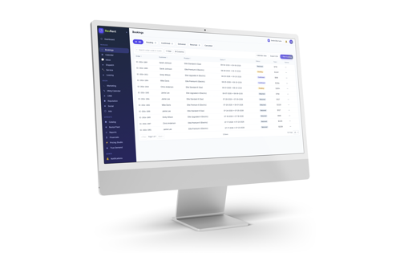
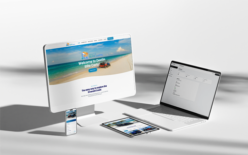
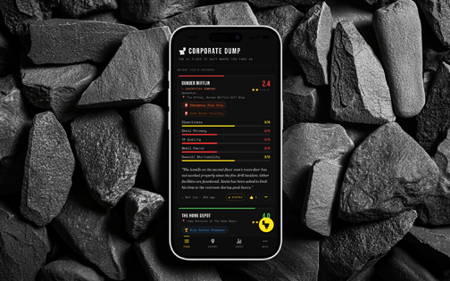
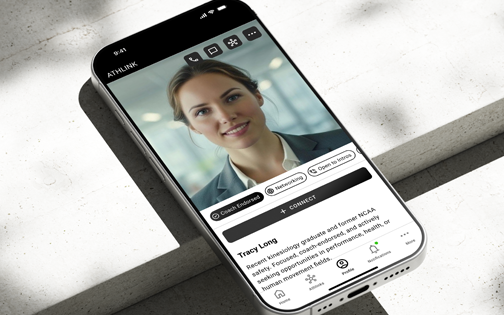

Good design decisions mean nothing if they sit in a Figma file. I spent 15 years designing enterprise software at scale — logistics marketplaces, design systems, high-density mobile workflows. Then I rebuilt my practice around a single idea: the designer should be able to ship. I use AI-directed development to move from product thinking to production software in days instead of months, while keeping full ownership of UX strategy, accessibility, and long-term quality.
Selected Work
Product Stories

Carrier 360
Lifecycle-driven mobile UX for a revenue-critical logistics marketplace supporting 175,000+ carriers.
Read Story
Corporate Dump™
An anonymous workplace restroom review app, treated with complete institutional seriousness.
Read Story
Let's build something.
Open to senior product design roles and AI-directed product work. The fastest way to reach me is email.
markyoung84@gmail.com